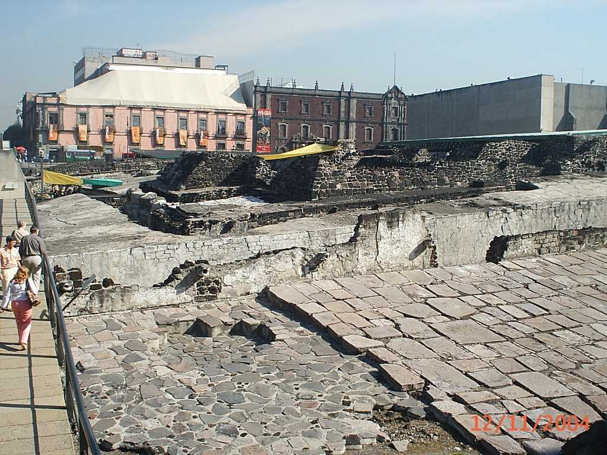
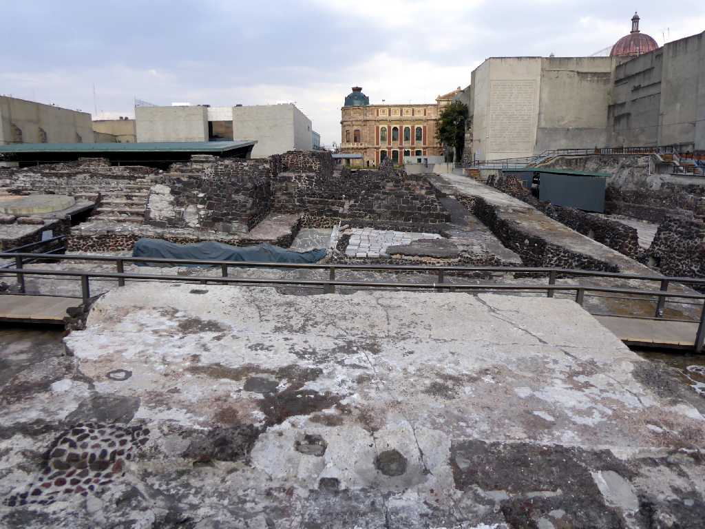
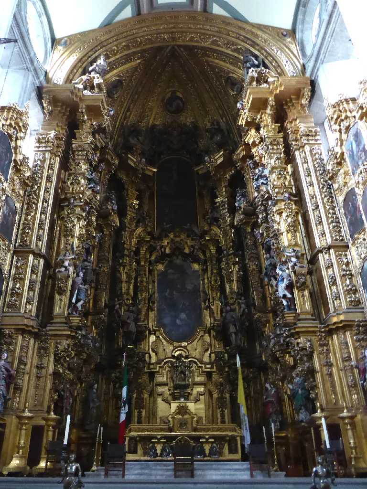
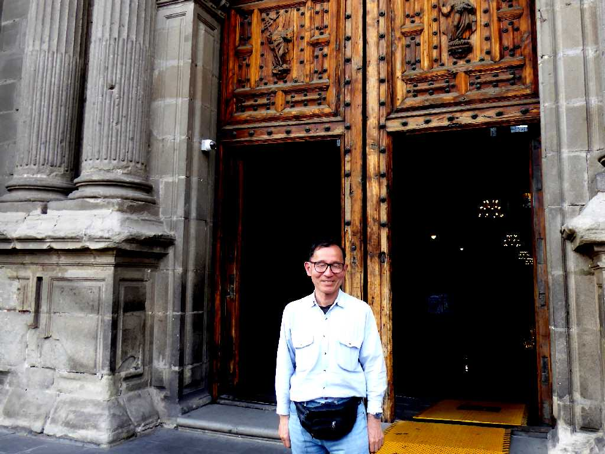

Templo Mayor Museo Ciudad de México
１５世紀頃栄えたアステカ帝国の壮大なテノチティトラン大神殿跡の一部が１９７８年に発見された もともとメキシコシティーはアステカ帝国をスペイン人が征服して後にできた街で地下にはアステカ時代の大都市が眠っていると思われる

March 12 2020 Templo Mayor Ciudad de México
約４０年ぶりの再訪問
Catedral Metropolitana de la Ciudad de México
１５７３年に建設が始まり１８１８年に完成したルネサンス・バロック・新古典主義様式のカトリックのメトロポリタン大聖堂

Altar Catedral Metropolitana de la Ciudad de México

March 12 2020 Catedral Metropolitana de la Ciudad de México


Mariachi